Laboratório de Circuitos Digitais - MC613

Relatório do Projeto Final
-> Leonardo Maldonado Pagnez
-> Rodrigo Ceccato de Freitas
- Data de Entrega: 21/06/2017
-> Placa Altera EP2C20F484;
-> Monitor com entrada vga;
- Teoria:
Este projeto almeja apresentar as habilidades adquiridas pelos alunos responsáveis na formação de circuitos digitais estudados durante o semestre.
Dentre os vários tópicos de instrumentos lógicos projetados na linguagem VHDL (Very High Speed Integrated Circuit Hardware Description Language) estudados na disciplina, esta seção destaca os seguintes: Máquina de Estado (Mealy), Flip Flops D, Multiplexadores, Memória RAM, barramentos e comunicação entre dispositivos por meio da VGA.
- Descrição do Sistema:
Para introduzir o sistema projetado pela dupla, foi decidido uma imagem para demonstrar a magnitude do código desenvolvido para o projeto final: o netlist desenvolvido pelo programa Quartus™ do arquivo principal ‘breakout.vhd’:
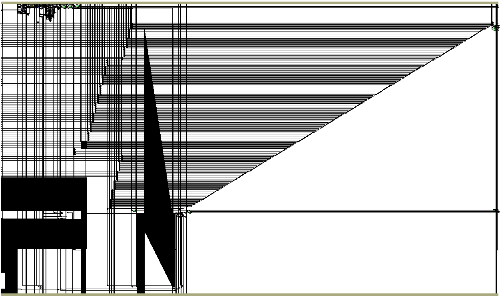
Longe de ser uma imagem facilmente compreensível, ela foi inserida para promover a estupefação dada a complexidade da lógica do circuito digital desenvolvido. Além da imagem, algumas estatísticas sobre este código são também adicionados para reafirmar tal ponto: 9 subcomponentes são instanciados com lógicas internas de variados graus de complexidade, mais de 35 sinais instanciados a priori para satisfazer as ligação de toda circuitagem dos subcomponentes, sendo dois destes sinais vetores de 12193 unidades de sinal cada.
Passado a sensação inicial do projeto, desenvolveu-se um novo exemplo para demonstrar de maneira mais clara e concisa os principais componentes do projeto englobados no arquivo principal ‘breakout.vhdl’.
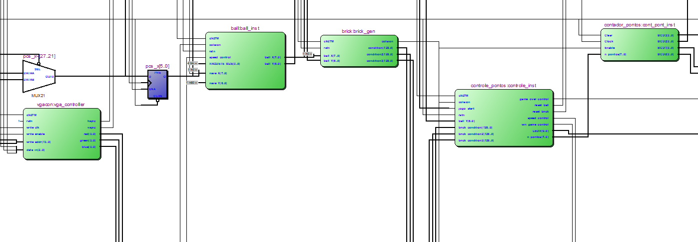
II.A Divisão de Módulos
Dada a imagem, serão descritos cada um dos 5 tipos diferentes de subcomponente instanciados 9 vezes durante todo o arquivo ‘breakout.vhd’, suas funções dentro do circuito, entradas, saídas e um pequeno resumo da lógica interna:
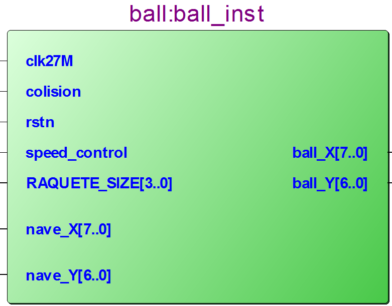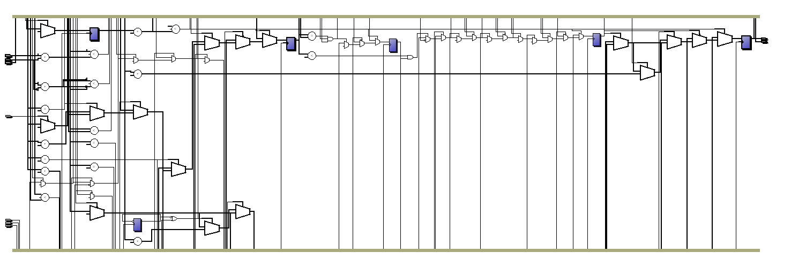
- Função: Controlar o movimento e a posição da bola utilizada no jogo. Esse bloco atualiza as posições no eixo X e eixo Y em relação a sua posição anterior, o seu movimento e o seu histórico de colisões.
- Entradas: As entradas são um clock de borda alta; um sinal de colisão; um sinal de reset; um sinal para a velocidade; dois integer de alcance 95 e 128, posições máximas do display do jogo que definem a posição da raquete; e um integer que define o tamanho em pixels no eixo X da raquete.
- Saídas: As saídas serão dois buffers integers de alcance também de 95 e 128, que representam a posição atual da bola no eixo Y e no eixo X, respectivamente.
- Lógica Interna: Em poucas palavras, a ideia central da lógica do componente gira em torno de um ‘process’ que checa os valores da entrada em busca de uma colisão da bola, seja com o extremo superior da parede, com a raquete ou com os blocos. Caso não ocorra uma colisão, o código então decide que a bola deve se mover a partir dos sinais internos de direção X e Y do bloco.
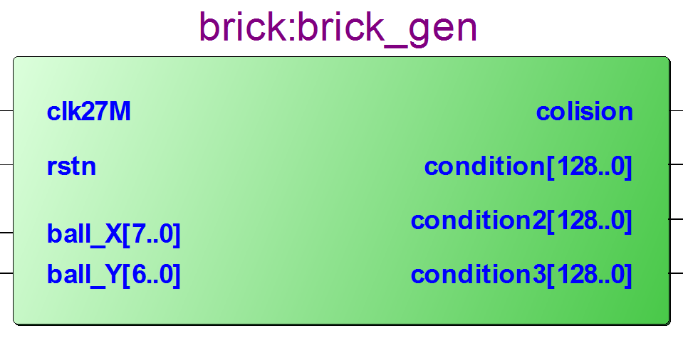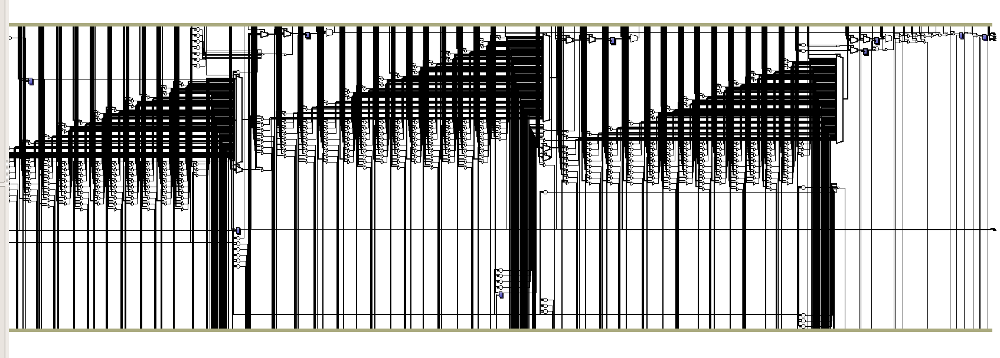
- Função: Este componente é responsável pelo controle do número de blocos breakout para se atingir, avisar o componente ‘ball’ que houve uma colisão com a bola e deletar os blocos colididos.
- Entradas: O ‘brick’ possui como entrada um clock, um reset e os integers de tamanho máximos limitados pela resolução da tela dos quais representam a posição atual da bola.
- Saídas: Como sinal de saída, temos o sinal lógico que avisa o componente ‘ball’ de colisões com os blocos; e temos 3 vetores de sinais lógicos de condição que servem para o monitor usar quando preencher os pixels com ou sem os blocos.
- Lógica Interna: Também gira em torno de um ‘process’ que manipula o sinal de cada um dos 128 pontos de cada um dos 3 vetores de condição. Ou seja, quando a bola entra em contato com a região próxima a um bloco, o signal de um dos vetores que é responsável pela região se tornará 1, os pixels do bloco serão removidos e a lógica de contato será desativada.
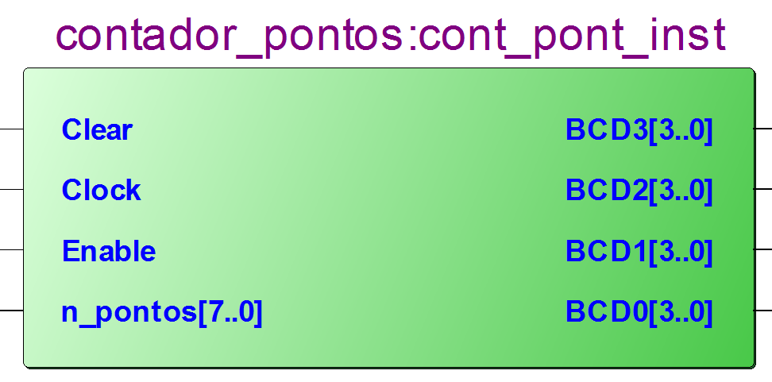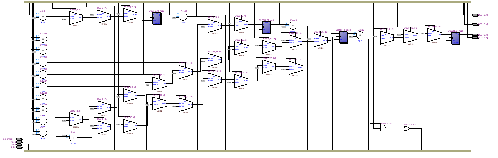
- Função: Contar a pontuação do jogador durante sua experiência no breakout, ou seja, cada vez que o jogador destrói um dos blocos, ele é agraciado com uma pontuação, condicionada pelo tempo, que será mostrada no display da placa.
- Entrada: o componente é composto por um sinal de clear, um sinal de clock, um sinal de enable e um integer de range 128 que contém o valor de pontos a serem acrescentados no display.
- Saída: são utilizados 4 buffers que são vetores de sinais de tamanho 4 com os valores atuais da pontuação a serem demonstrados no display.
- Lógica Interna: Em suma, o contador possui um ‘process’ que modifica a pontuação apenas com o enable ligado, valor associado ao sinal de colisão do componente brick.
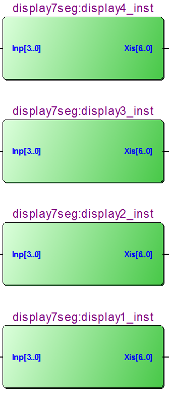 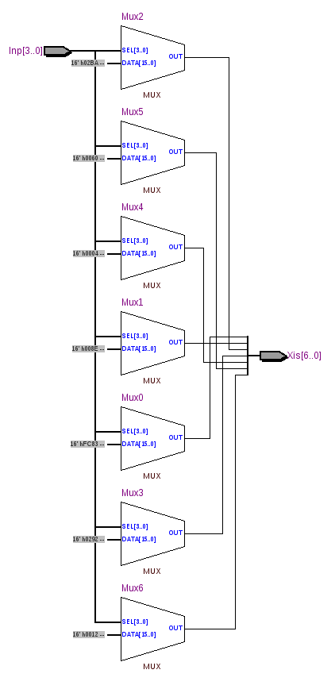
- Função: Apresentar os valores da pontuação nos 4 displays de 7 segmentos disponíveis na placa utilizada durante o projeto.
- Entrada: Uma entrada relacionada ao sinal de BCD emitido pelo controlador de pontos.
- Saída: Apenas uma saída com um sinal semelhante ao BCD que deverá avisar quais luzes do Hexadecimal selecionado serão acendidas.
- Lógica Interna: Um process que controla a frequência de 60 Hz quando modificar a pontuação gravado no BCD.
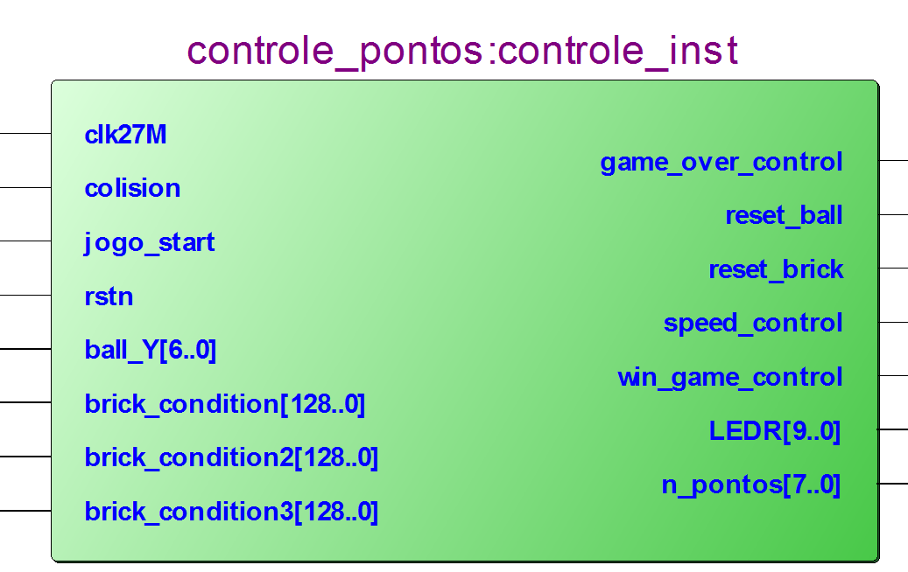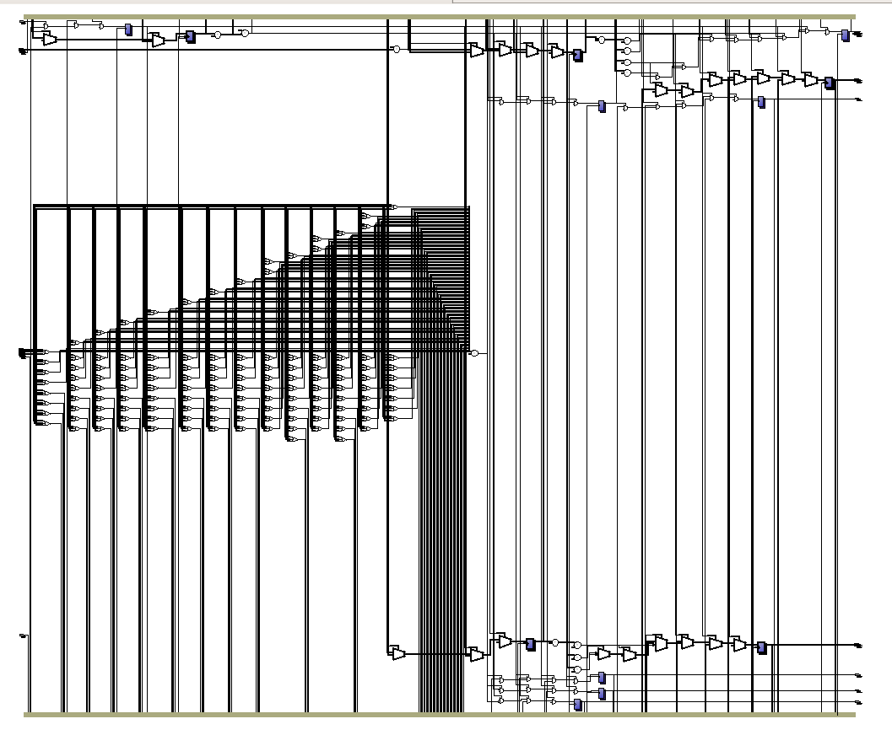
- Função: Componente responsável principalmente pelo fluxo do jogo. Ele coordena os estágios do jogo, sendo eles o começo, durante e o fim do jogo; coordena o número de vidas disponíveis para o jogador continuar tentando conquistar o objetivo; coordena a velocidade da bola e coordena os sinais do componente brick para atualizar a pontuação no ‘contador_pontos’.
- Entradas: ‘Controle_pontos’ possui como entrada um clock, o sinal de detecção de colisão derivado do brick.vhd, o sinal de entrada para iniciar o jogo, um sinal de reset, um integer com a posição atual da bola, e os 3 vetores de 128 sinais responsáveis pelo comportamento dos blocos coloridos.
- Saídas: O componente envia como saída o sinal de controle do fim de jogo, os dois sinais que controlam o reset do componente ball e do componente brick, o sinal de controle das duas velocidades disponíveis da bola, o sinal de controle que avisa se o jogador venceu o jogo, um vetor de sinais que controlam o display das vidas restantes do jogador e um integer que avisa quantos pontos devem ser somados.
- Lógica Interna: Dentro de um bloco ‘process’ , o código é formado por diversas condicionais que definem quantas vidas o jogador possui, se houve colisão, quantos pontos devem ser computados, se o jogador foi derrotado e checar se o jogador foi vitorioso e destruiu todos os blocos coloridos dentro das duas fases disponíveis.
II.B Principais Decisões do Projeto
Durante a construção do projeto, decisões foram tomadas para auxiliar no desenvolvimento de um protótipo funcional. Tais decisões serão discutidas nesta seção e justificadas de maneira sucinta.
Para o cumprimento das sugestões feitas na página principal da disciplina, foi tomada a decisão de fazer de maneira mais simples possível o controle da velocidade da bolinha durante as duas fases: sendo que a segunda é duas vezes mais rápida que a primeira. Esta decisão foi feita para evitar os problemas de temporização que vieram a ocorrer durante os experimentos com o projeto. A decisão foi: a bolinha se moveria a cada 2 clocks na primeira fase, e se moveria a cada 1 clock na segunda. Esta decisão provou ser decisiva em diferenciar as velocidades e ao mesmo tempo evitar os problemas de temporização testemunhados durante o projeto.
Outra decisão tomada com intuito de tornar o jogo funcional se dá em conta da maneira como o teste de colisão foi feito. A bola ao chocar com os blocos possui uma pequena vantagem sobre o cálculo de colisão, resultado: nossa bolinha perde precisão ao identificar qual será a direção ser modificada quando vários blocos estão muito próximos um do outro e ela acaba possuindo um comportamento errático de simplesmente passar por todo os blocos sem nunca voltar para a raquete. A solução tomada foi desenvolver um Delay de colisão, para que a bola receba a sugestão de direção e volte de maneira apropriada para a raquete.
Durante a fase final de desenvolvimento do projeto, encontrou-se um problema com o controle de estados (início -> durante -> final) do jogo. O jogo continuava após a cena final de Game Over e sua pontuação continuava contando, mesmo que você já tivesse perdido o jogo. Para solucionar o problema, prendemos a bola na raquete após o jogo acabar, para que a lógica do jogo esteja em estado de pausa até o reset do jogo.
- Conclusões
Encerrado o projeto, a dupla decidiu ressaltar alguns pontos importantes que marcaram o desenvolvimento do jogo.
Durante todo o desenvolvimento, um dos maiores obstáculos que foi ultrapassado sem decisões adicionais é exprimido pela instanciação de sprites dentro do jogo. Após várias tentativas e erros, a dupla conseguiu desenvolver uma sequência de bits longa o suficiente para cobrir todo o espaço que o sprite (por exemplo a tela de “fim de jogo”).
Além disso, a questão da temporização estudada exaustivamente em aula mostrou ser crucial para a compreensão dos problemas de colisão e movimentação da bola percorrendo o monitor.